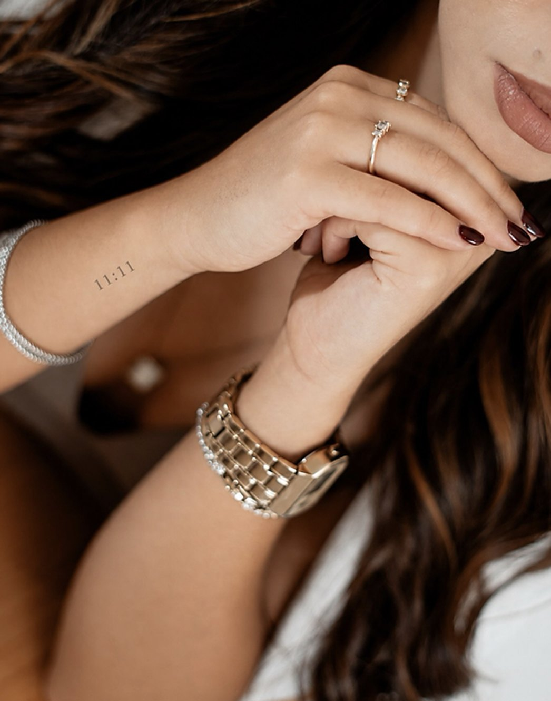
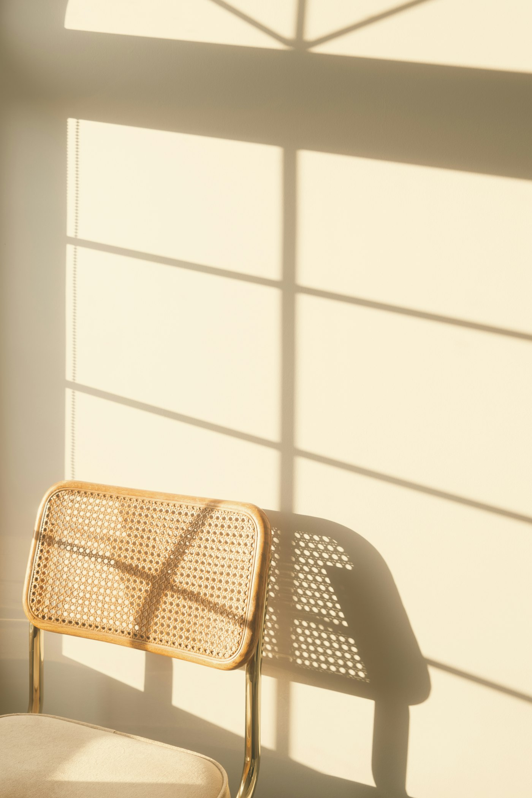
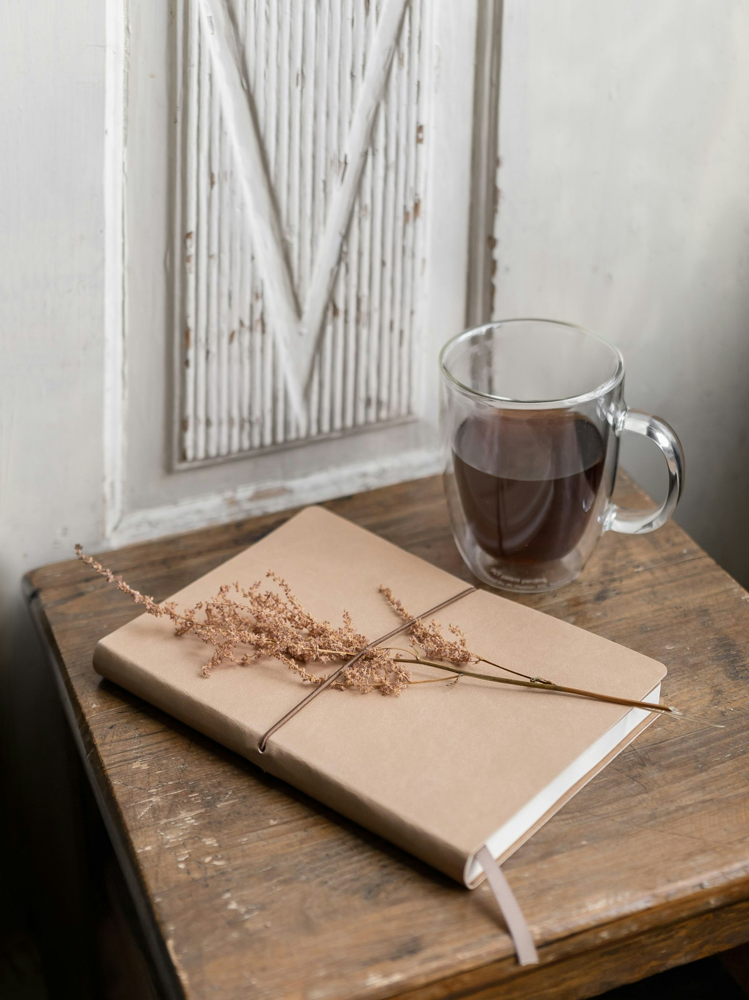

Psicóloga clínica
Cuidar de ti também é uma prioridade.
Sem culpa. Ao teu ritmo.
Um espaço seguro para falares, pores em foco o que sentes e encontrares mais leveza no dia a dia.
LevezaPausaAutocuidado
Menos exigência. Menos culpa. Mais espaço para ti.
E se não estiveres cansado/a da tua vida, mas da forma como tens vivido? Às vezes, o primeiro passo é só abrandar o suficiente para te ouvires.

5 sinais que podes estar a ignorar
Estás a exigir demasiado de ti?
Assinala o que te soa familiar. Quanto mais notas, mais nítido fica.
Assinala o que te soa familiar. Não há respostas certas nem erradas.
Esta lista não é um teste psicológico nem um diagnóstico, e não substitui a avaliação por um/a profissional.
Quero falar sobre istoConsultas online e presenciais
Onde estiveres, ao teu ritmo.
Escolhes a modalidade que te deixa mais à vontade. A conversa é a mesma.

A consulta chega até ti.
Em casa, no intervalo do trabalho ou noutra cidade. Só precisas de uma ligação estável e de um espaço onde possas falar à vontade.
- Sem deslocações nem trânsito
- Um ambiente que já conheces
- Plataforma de videochamada: a confirmar com a cliente
Um espaço calmo, só para ti.
Uma sala reservada e acolhedora, pensada para te sentires confortável desde a primeira vez.
- Conversa cara a cara, sem pressas
- Um tempo que é só teu
- Morada e acessos: a confirmar com a cliente
Do que se pode falar
Temas que podes trazer
Não precisas de saber nomear tudo. Podes começar por aquilo que mais pesa hoje.
Temas ilustrativos · a validar com a cliente
Um espaço para perceber o que se passa no corpo e na cabeça quando a preocupação não pára, e para encontrar formas de abrandar.
Quando nada chega para ficares satisfeito/a. Olhar com calma para as regras que te impões e para o que elas custam.
Aprender a falar contigo com a mesma gentileza com que falarias com alguém de quem gostas.
Perceber o que está a pesar, o que podes deixar de carregar sozinho/a e como criar pausas que de facto descansam.
Família, casal, amizades, trabalho: o que se repete, o que te custa dizer e o que gostavas de fazer de outra forma.
Novas fases, novas escolhas ou o sentimento de estares parado/a. Um tempo para pensar em voz alta, sem pressa.
Conhece melhor a psicóloga
Mariana Sousa
Acredito que cuidar da saúde mental é também aprender a equilibrar corpo e mente. As consultas são um espaço de escuta, sem julgamentos e sem pressa, online ou presencialmente.
Texto ilustrativo · a validar e a completar com a Mariana
- Cédula profissional
- a confirmar
- Formação
- a confirmar
- Abordagem
- a confirmar
Como funciona
A primeira consulta, passo a passo
Dar o primeiro passo costuma ser a parte mais difícil. Por isso, fica a saber o que acontece.
Processo ilustrativo · a confirmar com a cliente

1
Dizes olá
Envias uma mensagem ou preenches o formulário. Respondemos para combinar o melhor dia e a modalidade.
2
Marcamos
Online ou presencial, num horário que caiba na tua semana. Se precisares de ajustar, é só dizer.
3
Conversamos
Na primeira consulta falamos do que te trouxe até aqui. Sem pressas e sem respostas certas ou erradas.
4
Definimos o ritmo
Combinamos em conjunto a frequência e o caminho que faz sentido para ti. Sem culpa, ao teu ritmo.
Perguntas frequentes
Antes de marcares
Posso fazer a consulta online?
Sim. Há consultas online e presenciais, e podes escolher a que te deixa mais à vontade.
A consulta é confidencial?
O sigilo profissional é um princípio fundamental da psicologia. O que falas numa consulta fica entre ti e o/a psicólogo/a, salvo as exceções previstas na lei e no código deontológico.
Preciso de estar “mal” para marcar?
Não. Podes procurar acompanhamento psicológico num momento difícil, mas também para te conheceres melhor, tomares uma decisão ou simplesmente teres um espaço para pensar.
Quanto dura e qual é o valor da consulta?
Duração, frequência e valores: a confirmar com a cliente
Como posso marcar?
Podes usar o formulário abaixo ou enviar mensagem no Instagram @marianasousa_psicologia. Respondemos para combinar o dia, a hora e a modalidade.
Contacto
Vamos conversar?
Conta-nos, em poucas palavras, o que procuras. Respondemos com calma e sem compromisso.
- @marianasousa_psicologia
- Telefone
- a confirmar com a cliente
- a confirmar com a cliente
- Morada
- a confirmar com a cliente
- Horário
- a confirmar com a cliente